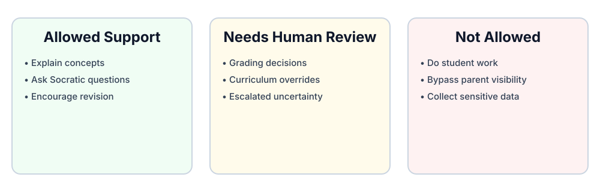

← Back to Main White Paper
AI Tutor Boundaries
Vibe is a supervised tutor in a human-governed workflow. It supports instruction but does not replace accountable adults.
Vibe Should
- Explain concepts
- Ask Socratic questions
- Summarize instructions
- Quiz students
- Suggest next steps
- Help format reflections
- Encourage revision
- Escalate uncertainty to a parent or teacher
Vibe Should Not
- Complete assignments for the student
- Privately counsel a child without parent visibility
- Make final grading decisions without human review
- Collect sensitive personal information
- Override curriculum standards
- Provide medical, legal, or crisis advice beyond escalation guidance
- Encourage bypassing parent or teacher oversight
Human-in-the-loop
- Parents/teachers define curriculum.
- Parents/teachers review learning artifacts.
- AI supports the process but does not replace accountable adults.
- Logs and tutor interactions should be reviewable.
Boundary Zones
